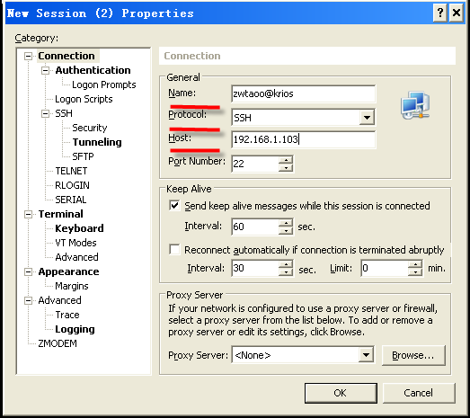
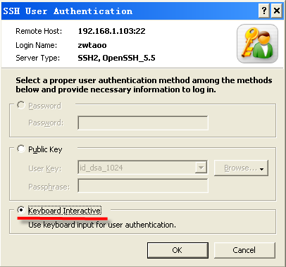
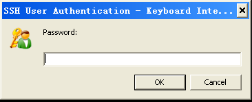
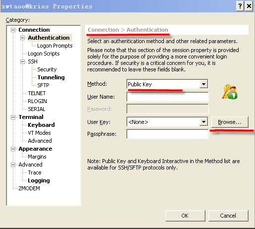

SSH 登录 Linux服务器 流程说明¶
| 作者: | 陈庚 huhuchen.42qu.com |
|---|
Xshell : 极好用的免费SSH客户端¶
创建session¶
安装好xshell后，打开软件，点击菜单栏“File”中的“new”,将出现下图所示弹窗，填写相应信息。其中Host为邮件中所给的主机ip地址（name栏可以不用修改，但一般为便于在xshell中区分不同的主机，自己一般会修改为“用户名@主机”，也可以用“用户名@42qu”），然后点击“ok”。
登录¶
在随后弹出的弹窗中选择自己创建的帐号，点击“connect”，在弹出窗口中输入邮件中提供的用户名，新窗口中选择“keyboard Interactive”
并确定，最后输入邮件中提供的密码，即可登录到自己的vps中。

- 
- 
配置密钥登录 , 无需每次输入密码¶
为避免每次登录vps都需要重复输入用户名和密码的步骤，可以通过生成.ssh/authorized_keys来减少麻烦。
执行:
cd ~
命令，来到home(家)目录
执行:
ssh-keygen
命令 , 然后按两次回车, 生成密钥
执行:
cd .ssh
进入.ssh目录
执行:
cat id_rsa.pub >> authorized_keys
将把当前目录下
id_rsa.pub中的数据拷贝一份到新建的authorized_keys档案中。

点击导航中的“new file transfer”图标，如下图所示。

弹出窗口中忽视警告，确定后输入密码，在.ssh目录下执行“get id_rsa”命令，id_rsa将被保存到下图红线所示的本地目录中。

在xshell菜单栏中依次点击“File”->“open”，选中你的session用户，并点击“Properties”，如下图所示。

做下图所示修改，点击“Browse”按钮。
点击import按钮，选择id_rsa，之后一路确定，再次登录是就可以不用再输入用户名和密码了。